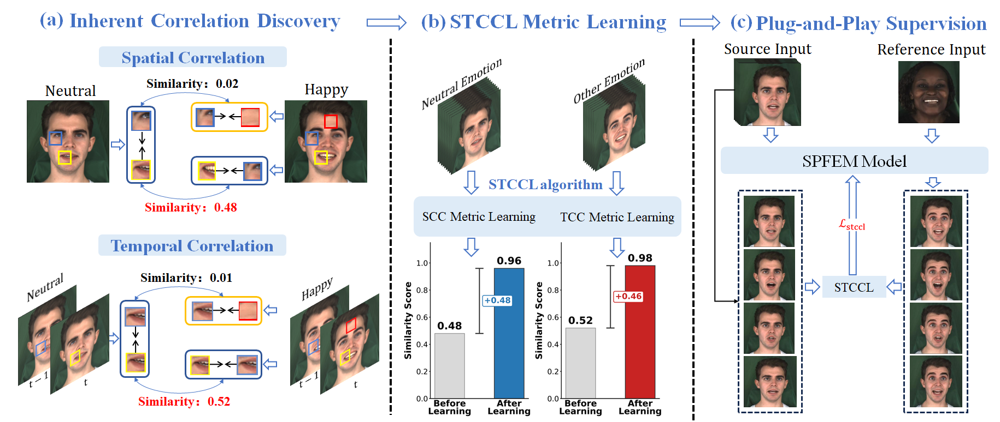
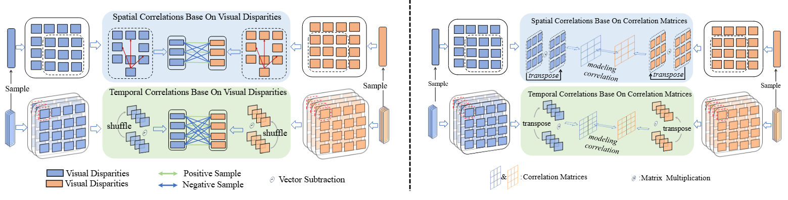

Learning Spatial-Temporal Coherent Correlations for Speech-Preserving Facial Expression Manipulation
Abstract
Speech-preserving facial expression manipulation (SPFEM) aims to modify facial emotions while meticulously maintaining the mouth animation associated with spoken content. Current works depend on inaccessible paired training samples for the person, where two aligned frames exhibit the same speech content yet differ in emotional expression, limiting the SPFEM applications in real-world scenarios. In this work, we discover that speakers who convey the same content with different emotions exhibit highly correlated local facial animations in both spatial and temporal spaces, providing valuable supervision for SPFEM. To capitalize on this insight, we propose a novel spatial-temporal coherent correlation learning (STCCL) algorithm, which models the aforementioned correlations as explicit metrics and integrates the metrics to supervise manipulating facial expression and meanwhile better preserving the facial animation of spoken contents. To this end, it first learns a spatial coherent correlation metric, ensuring that the visual correlations of adjacent local regions within an image linked to a specific emotion closely resemble those of corresponding regions in an image linked to a different emotion. Simultaneously, it develops a temporal coherent correlation metric, ensuring that the visual correlations of specific regions across adjacent image frames associated with one emotion are similar to those in the corresponding regions of frames associated with another emotion. Recognizing that visual correlations are not uniform across all regions, we have also crafted a correlation-aware adaptive strategy that prioritizes regions that present greater challenges. During SPFEM model training, we construct the spatial-temporal coherent correlation metric between corresponding local regions of the input and output image frames as addition loss to supervise the generation process. We conduct extensive experiments on variant datasets, and the results demonstrate the effectiveness of the proposed STCCL algorithm.
STCCL Overview

Integrate STCCL into NED

STCCL Algorithm Overview

Left half: Illustration of spatial-temporal coherent correlation metric learning based on Visual Disparity. It constructs dense positive and negative samples in the feature space to train the metric for fine-grained alignment.
Right half: The algorithmic variant based on Correlation Matrices, capturing holistic structural dependencies via matrix multiplication to model complex facial dynamics.
Video Examples
💡 Note on Side-by-Side Comparisons
The proposed STCCL is an architecture-agnostic supervisory module designed to enhance existing Speech-Preserving Facial Expression Manipulation (SPFEM) backbones. To demonstrate its effectiveness as a "plug-and-play" enhancement, we provide direct side-by-side comparisons below. Each video follows this 4-column layout:
- Column 1: Source - Input neutral video providing the ground-truth mouth animation.
- Column 2: Baseline (SOTA) - Results from the original state-of-the-art models (e.g., EAT, DICE-Talk) without our STCCL.
- Column 3: Ours (STCCL-CM) - Backbone enhanced by STCCL (Correlation Matrix formulation).
- Column 4: Ours (STCCL-VD) - Backbone enhanced by STCCL (Visual Disparity formulation).
Observe that STCCL effectively preserves fine-grained articulatory details (mouth shape) from the Source while maintaining the target emotional expressions, surpassing the original SOTA baselines.